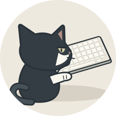
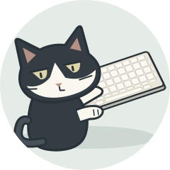
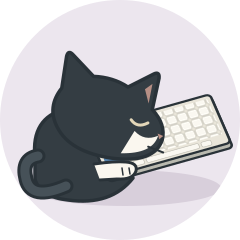
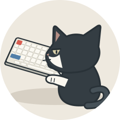
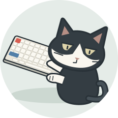
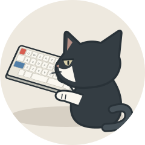
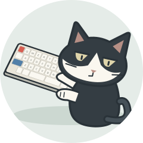
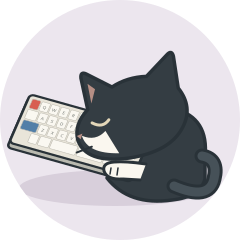

현재 블로그 프로필은 유지. 아래 키 배열은 구도 비교용으로 단순화한 시안입니다.

뒤통수 중심, 옆눈만 살짝.

몸은 키보드로, 얼굴은 뒤로.

키보드에 기대어 꾸벅.

01 변형 · 빨간 Esc와 파란 Shift 노출.

02 변형 · 표정과 포인트 키캡 함께.
03 변형 · 포인트 키캡을 가리지 않는 방향.

숫자 행 없이 · 분할 스페이스바.

빨간 Esc · 파란 왼쪽 Shift.

4줄 배열 · 포인트 키캡 유지.